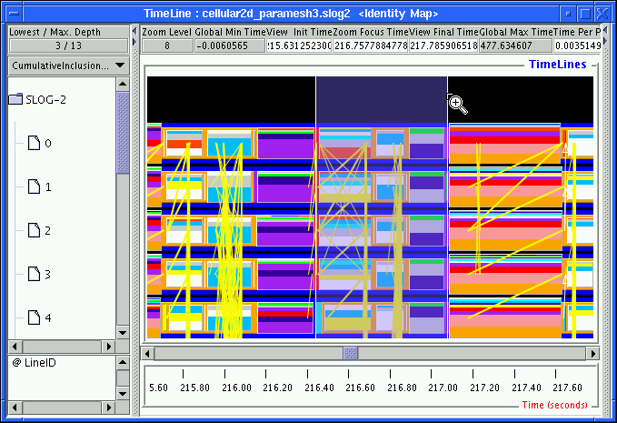

A preview drawable is created as a result of the renormalization process of the SLOG-2 format. The renormalized object provides a high-level description of what is going on within the (timeline vs time) region where the preview object spans. Preview drawable is designed to amalgamate real drawables of same topological type, e.g. preview state amalgamates only states. So preview drawable is always a primitive drawable in the renormalization scheme. There are currently 3 different types of preview drawables: Preview_State, Preview_Arrow, and Preview_Event. Therefore one preview drawable is for each supported topology of primitive drawable. Up to three preview categories could show up in the Legend window of the display program as shown in Figure 3.5. The Legend window contains a table of legends which are basically visual representation of category objects mentioned earlier. Each legend provides an interface to the user modifiable part of the corresponding category that is relevant to the display program.
Figures 2.1 to 2.5 illustrate the visual transition from preview drawable to its detailed content of the first 5 processes of a 16 processes MPI slog2 file when the timeline canvas is being zoomed-in. The sequence of figures is generated by zooming in a marked region in each successive figure in the sequence. The marked region is shaded and is bounded by a pair of white lines. A magnifying glass with plus sign in the center is the cursor that marks the end of the zoom region. Figure 2.1 is a typical timeline canvas where most of real drawables are still buried inside their preview drawables. In the figure, there are preview arrows, preview states in the front and some long running real states in the back.
|

|
Each thick yellow line is a preview arrow which represents a collection of arrows between its 2 ending timelines. The start and final timestamps of preview arrow are the extremes of all real arrows amalgamated inside the preview object. Notice that the beginning or ending timestamp of a preview arrow does not necessarily mean that there is any arrow starting and ending at that times, it just indicates that there are arrows starting or ending within these 2 times and between the 2 marked timelines. The thickness of the preview arrow denotes the number of real arrows represented by the preview object. Because of the limitation on the available thickness that preview arrow can have, the thickness of the preview object is set to equal to the order of magnitude of the number of real objects amalgamated. So same thickness in two different preview arrows does not mean that they contain exactly the same number of real arrows, but does mean that the numbers of real arrows contained in the preview objects are within the same order of magnitude, i.e. within a constant multiplicative factor as defined by PREVIEW_ARROW_LOG_BASE in Preference window shown in Figure 3.27 and in Table 3.18. Different thickness in preview arrows indicates more than one multiple of the constant factor difference in the number of real arrows between the preview objects.
The rectangle that has horizontal strips of colors is preview state. The different colors inside a preview state represent the various categories of real states that are amalgamated within the time range of the preview state. Depending on the PREVIEW_STATE_DISPLAY value selected in the pulldown menu at the top of left side Y-axis label 2.2, the distribution and the heights of the strips can be changed drastically. One of the display options for preview state is CumulativeInclusionRatio. With this option, the strips are arranged in decreasing height order, sort of like a small cumulative histogram. The tallest strip at the bottom of the preview state corresponds to the category of states that contribute the longest total duration in the specified time range inclusively, i.e. disregarding the nesting state order. This visual representation aims to tell what state categories could be within the span of the preview state and which state category contributes the most statistically to the specified time range, so user can decide where to zoom in to find out more details. In a sense, the preview states provide a global coarse-grain summary of what is going on without losing as much details as the preview found in older Jumpshot, i.e. Jumpshot-3. Compared with Jumpshot-3's preview which has averaged out the information about timeline IDs, the new preview states retain the timeline ID information and that may lead to early detection of load balancing problem before zooming in to see all the real states.
Figure 2.2 shows a more zoom-in view of the region marked by the pair of white lines in Figure 2.1. In Figure 2.2, some of the preview arrows have disappeared and are replaced by real arrows, i.e. the white arrows. Also, some of the stripped preview states have split into several small preview states of identical color, i.e. the white and gray states, to show more detailed distribution. Another important feature of preview state becomes apparent in the figures: Preview states are properly nested within real states. In the most expanded Y-axis label view, preview state is always on top of other nested states2.3, i.e. states that enclose the preview state are alway real states. A good visual example is shown in Figure 2.2 where all the white, turquoise and gray preview states2.4 are sitting on top of the long orange and dark royal blue states. This indicates that the white, turquoise and gray real states are all nested inside the long running orange and dark royal blue states.
Figure 2.3 is the zoom-in view of the region marked by the pair of white lines in Figure 2.2. Comparing these 2 figures, all the preview drawables have disappeared and are replaced by real drawables. Each white preview state are replaced by hundreds of white real states, the same is also true for the gray preview states that sit to the right of the turquoise states2.5. The preview arrows are all replaced by the real arrows. It becomes apparent that the white lines marked region in Figure 2.2 provides a good description of what is going on in Figure 2.3 but at the same time it reduces the number of drawables drawn on the canvas by a factor of 100. Another way of seeing this benefit is to find out the exact number of real drawables amalgamated by the preview objects within the zoomed region. This can be achieved by right clicking on the preview drawable and the result is shown in Figure 3.16.
Further zooming into the white lines marked region in Figure 2.3 enlarges the real drawables that are displayed in the figure. The enlarged view is shown in Figure 2.4. The densely packed states and arrows become more distinguishable. Another zooming in around the white lines marked region in Figure 2.4 enlarges the real drawables into easily separable objects as shown in Figure 2.5.